Como usar este manual. Se você só quer começar, leia os
capítulos 1 a 4 (cerca de 10 minutos) e volte aos outros quando abrir uma
parte nova do app. Cada capítulo explica para que serve a tela,
como usar e traz dicas no fim. Este manual também fica dentro do
app, em Configurações › Sobre o App.
1Bem-vindo ao Nihongo Study
O Nihongo Study é um app para quem está começando a estudar
japonês. Ele junta, num só lugar, tudo o que um iniciante precisa: os
alfabetos, vocabulário, kanji, gramática, leitura, escuta, fala e escrita
à mão — e organiza isso num plano diário, para você não
precisar decidir sozinho o que estudar.
O que você encontra no app
Recurso
Para que serve
Lições
13 lições de gramática, vocabulário e cultura, explicadas do zero, sempre com romaji (leitura em letras latinas).
Palavras novas
O vocabulário do nível N5 (o primeiro nível do exame oficial de japonês), das palavras mais úteis para as menos.
Kanji
Cerca de 110 kanji do N5, com radicais, uma história para memorizar (mnemônico), leituras e exemplos.
Alfabetos (kana)
Treino de hiragana e katakana: reconhecer, escolher e desenhar.
Leitura
61 textos curtos em quatro níveis — dos primeiros passos, só em kana, a textos mais longos com kanji —, com furigana (leitura em cima do kanji) e significado de cada palavra ao toque.
Áudio
Ouvir textos, palavras e frases em japonês; modo shadowing (repetir junto) e ditado.
Flash cards
Cartões de memória com repetição espaçada: o app agenda cada palavra para a hora certa de relembrar.
Caligrafia
Desenhar kana e kanji na tela, com correção da forma e da ordem dos traços.
Exercícios
Quiz das lições, gramática em contexto (frases novas para completar), "Diga em japonês" e um diário guiado para escrever frases suas.
Progresso
Vocabulário, escrita, trilha das lições, o seu nível em cada habilidade e conquistas.
Três coisas importantes antes de começar
Funciona sem internet
Depois de aberto (ou instalado) uma vez, o app funciona offline — no metrô, no avião, em qualquer lugar.
Sem cadastro
Não há conta nem senha do app. Seus dados ficam guardados no seu aparelho — e, se você quiser, também no seu Google Drive.
Seus dados, seu controle
Ligue a sincronização com o Google Drive para ter uma cópia sempre em dia e estudar em mais de um aparelho (capítulo 9). Sem ela, faça backups de vez em quando.
Atenção: se você limpar os dados do navegador, ou
desinstalar o app, o progresso deste aparelho some junto. No iPhone/iPad o
sistema pode apagar dados de sites pouco usados. A proteção é simples:
ligue a sincronização com o Google Drive, ou exporte um backup de tempos
em tempos (Configurações › Dados).
2Primeiros passos
Abrir e instalar
O Nihongo Study roda no navegador — ele não está na Play Store nem na App
Store. Mas pode ser instalado como um app comum: ganha um
ícone na tela inicial, abre em tela cheia e funciona sem internet.
Lendo no computador? Aponte a câmera do celular para o código ao lado
para abrir o app direto no celular.
Android (Chrome)
Abra o endereço do app no Chrome.
Toque no menu ⋮ (três pontinhos, no canto de cima).
Toque em Adicionar à tela inicial — em algumas versões aparece como Instalar app.
Confirme em Instalar. O ícone do Nihongo Study aparece na tela inicial, junto com os outros apps.
9:41▴ ▮
⌂rcaneppele.github.io/nihongo-study⋮
1Menu ⋮
9:41▴ ▮
⌂rcaneppele.github.io/nihongo-study⋮
Nova guia
Histórico
Downloads
Compartilhar…
Adicionar à tela inicial
Configurações
2Adicionar à tela inicial
9:41▴ ▮
⌂rcaneppele.github.io/nihongo-study⋮
Instalar app
Nihongo Studyrcaneppele.github.io
CancelarInstalar
3Instalar
9:41▴ ▮
FotosAgendaMapasChromeCâmeraNihongoMúsicaNotas
4Pronto: abra pelo ícone
Ilustração dos passos no Android. Os nomes e a posição dos menus podem variar um pouco conforme a versão do Chrome.
iPhone e iPad (Safari)
Abra o endereço do app no Safari (é o caminho mais garantido no iPhone).
Toque em ··· (três pontinhos, ao lado do endereço) e depois em Compartilhar. Se a barra do Safari já mostrar o botão Compartilhar (um quadrado com uma seta para cima), toque direto nele.
Role a lista e toque em Adicionar à Tela de Início.
Deixe ligada a opção Abrir como App Web (quando aparecer) e toque em Adicionar, no canto de cima.
9:41▴ ▮
‹rcaneppele.github.io···
1Botão ···
9:41▴ ▮
Recarregar
Nova Aba
Adicionar aos Favoritos
Compartilhar
‹rcaneppele.github.io···
2Compartilhar
9:41▴ ▮
Nihongo Studyrcaneppele.github.io
Copiar
Adicionar aos Favoritos
Adicionar à Tela de Início
Buscar na Página
3Adicionar à Tela de Início
9:41▴ ▮
CancelarTela de InícioAdicionar
Nihongo Study
Abrir como App Web
4Adicionar
Ilustração dos passos no iPhone (iOS 26). Em versões mais antigas, o botão Compartilhar fica direto na barra de baixo do Safari.
No iPhone, o app instalado guarda os dados separados do Safari. Se você já estudou pelo Safari antes de instalar, leve o progresso para o app instalado: ligue a sincronização com o Google Drive nos dois (capítulo 9) ou exporte um backup no Safari e importe no app.
Computador (Chrome ou Edge)
Abra o endereço do app e clique no ícone de instalar na barra de endereço
(um monitor com uma seta) › Instalar. Também dá para usar direto
numa aba do navegador, sem instalar.
O app se atualiza sozinho: quando sai uma versão nova, ele baixa em segundo plano e recarrega no próximo momento tranquilo. Você não precisa fazer nada. A versão instalada aparece no topo da tela (no celular) ou no menu lateral (no computador).
Conhecendo a tela
No computador, o menu fica à esquerda; no celular, numa barra na parte
de baixo da tela, e as Configurações ficam no ícone de engrenagem no topo.
O menu tem sempre as mesmas cinco seções:
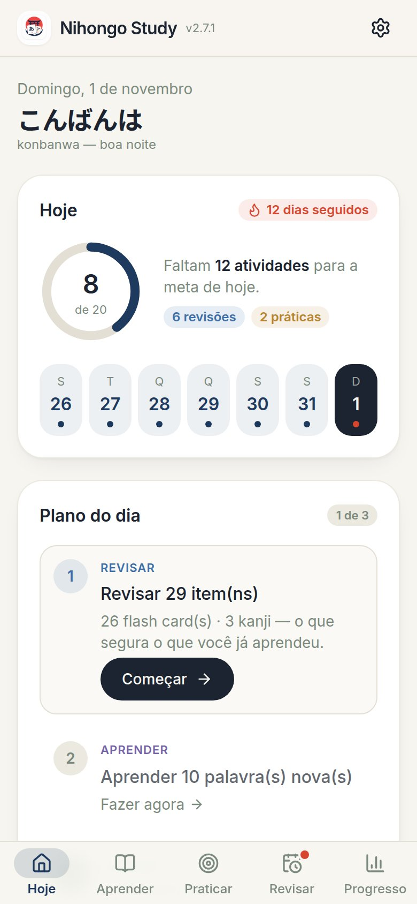
No celular: barra no topo com a engrenagem e menu inferior com as 5 seções.
Seção
Pergunta que responde
Hoje
"O que eu faço agora?"
Aprender
"O que tem de novo pra eu aprender?"
Praticar
"Quero treinar ler, ouvir, falar ou escrever."
Revisar
"O que eu preciso relembrar?"
Progresso
"Como estou indo?"
Dica: o número vermelho ao lado de Revisar
mostra quantos itens estão esperando revisão hoje. Quando ele some,
sua revisão do dia está em dia.
Você nunca se perde: mesmo dentro de uma ferramenta
(um texto de leitura, um treino de kana), o menu continua destacando a
seção em que ela mora.
Seu primeiro dia, passo a passo
Se ainda não lê hiragana: vá em Aprender › Lições e abra "Kana — Hiragana e Katakana". Depois treine em Aprender › Alfabetos.
Se já lê hiragana: abra a Hoje e siga o Plano do dia. No primeiro dia ele vai sugerir aprender 10 palavras novas.
Faça uma lição curta (por exemplo, "Saudações do dia a dia").
Leia o primeiro texto em Praticar › Ler. Toque nas palavras que não souber.
Volte amanhã: o app terá preparado a sua primeira Revisão do dia.
3O método: como estudar com o app
O app é organizado pelo jeito como se aprende uma língua, e
não por ferramenta. Todo conteúdo passa por um ciclo:
Aprenderter contato com algo novo, com explicação
→
Praticarusar nas 4 habilidades: ler, ouvir, falar, escrever
→
Revisarrelembrar na hora certa, antes de esquecer
→
Acompanharver o que domina e onde está fraco
Por cima de tudo está a tela Hoje, que monta o ciclo do
dia para você. Se você só seguir o Plano do dia, já estará usando o método.
Por que revisar todo dia?
A memória esquece rápido o que acabou de aprender, e cada revisão no
momento certo faz a lembrança durar mais. Por isso o app usa
repetição espaçada: uma palavra que você acabou de aprender
volta no dia seguinte; se você lembrou, volta em alguns dias; depois em
semanas. Quem decide a data é um algoritmo (FSRS) a partir das suas
respostas — você só precisa revisar o que o app pedir.
A regra de ouro: faça a Revisão do dia antes de
aprender coisas novas. Pular revisões deixa a fila crescer; aprender
demais de uma vez faz a revisão dos próximos dias ficar pesada.
Quanto tempo por dia?
Tempo disponível
Sugestão
10 minutos
Só a Revisão do dia.
20 minutos
Revisão do dia + 10 palavras novas ou um treino de kana.
40 minutos
Revisão do dia + um pedaço de lição + um texto de leitura (lendo e depois ouvindo).
1 hora ou mais
O plano acima + uma habilidade de produção: Diga em japonês, shadowing ou caligrafia.
Constância vale mais que quantidade: 15 minutos todos os dias rendem mais que 2 horas no fim de semana.
4Hoje — o seu plano do dia
É a primeira tela do app. Ela responde "o que eu faço agora?"
e mostra quanto você já estudou hoje.
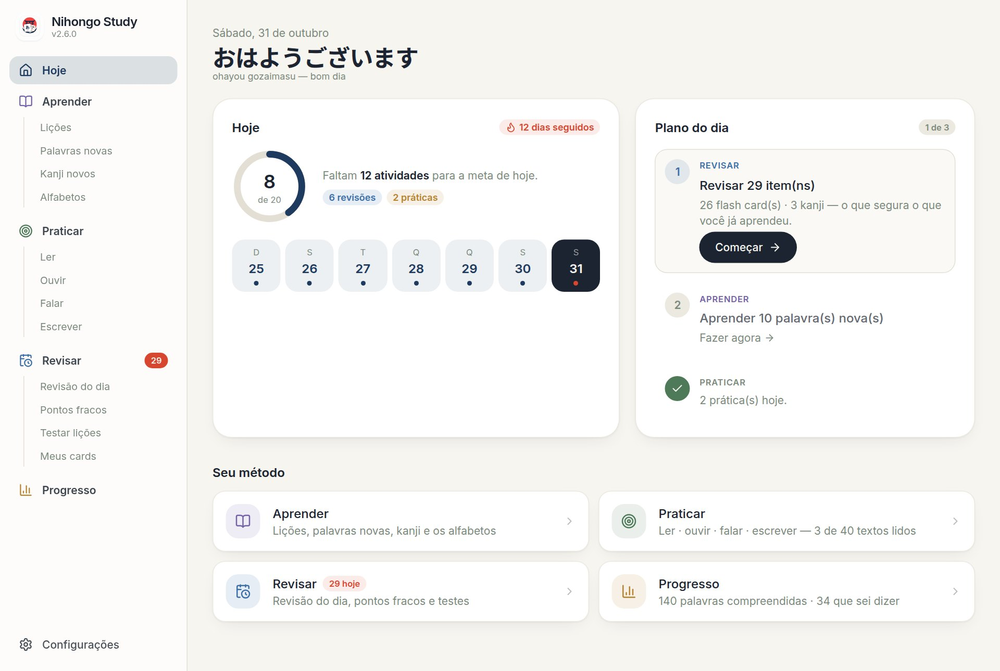
A tela Hoje: bloco do dia à esquerda, Plano do dia à direita e, embaixo, os atalhos para cada parte do método.
As partes da tela
Parte
O que mostra
Anel da meta
Quantas atividades você fez hoje, de uma meta diária (20, por padrão). Fica verde quando a meta é batida.
Selo de sequência
Quantos dias seguidos você estudou (🔥 "13 dias seguidos"). Qualquer atividade conta.
Faixa da semana
Os últimos 7 dias: um ponto em cada dia em que você estudou; hoje fica em destaque.
Plano do dia
Até 3 passos, na ordem do método: Revisar → Aprender → Praticar. O passo atual tem o botão Começar; os feitos ganham um ✓ verde.
Seu método
Atalhos para as quatro seções, com um resumo de cada (itens para revisar, textos lidos, palavras compreendidas).
Como a meta diária é contada
Você fez…
Vale
Uma resposta na revisão (flash card ou kanji)
1 atividade
Uma resposta num treino (kana, quiz, ditado, Diga em japonês, prática livre)
1 atividade
Uma palavra ou kanji aprendido pela primeira vez
1 atividade
Um texto de leitura concluído ("Terminei a leitura")
10 atividades
Nota: a meta pode ser trocada para 10, 20, 40 ou 60 em
Configurações. Se ainda não estudou hoje, a sequência continua contando
até ontem — você tem o dia inteiro para mantê-la.
5Aprender — conteúdo novo
Aqui fica tudo o que é novo para você. Toda
seção do app (Aprender, Praticar e Revisar) abre com um cartão
Próximo passo: a ação mais útil agora, calculada a partir do
seu histórico. Se estiver em dúvida, clique em Começar nele.
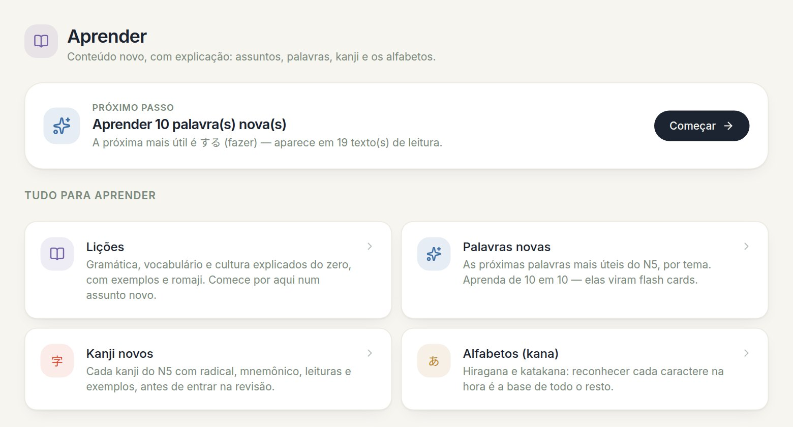
A seção Aprender: o próximo passo recomendado e as quatro formas de aprender.
5.1 Lições
São explicações completas, como as de um professor: o que é, por que
existe e quando se usa cada ponto de gramática ou vocabulário, com muitos
exemplos, notas culturais e os erros mais comuns de quem fala português.
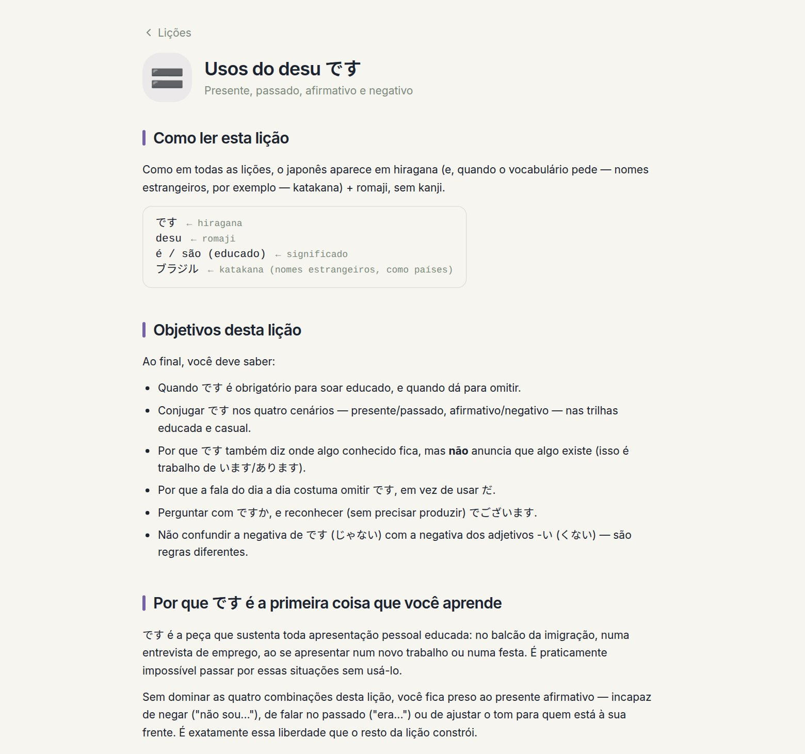
Toda lição abre com "Como ler esta lição" e os objetivos.
Os exemplos aparecem em hiragana/katakana + romaji + tradução. Não há kanji nas frases de exemplo; quando aparece kanji em alguma tabela, ele é só uma referência opcional, com a leitura pequena em cima.
Toque no ícone de alto-falante para ouvir a frase.
No fim de cada lição, clique em Concluí esta lição. A lista de lições mostra a sua trilha ("3 de 13 lições concluídas"), a próxima lição e um selo em cada uma (Concluída ou Em andamento). Mudou de ideia? Desmarcar desfaz.
Concluir uma lição conta como item novo na meta do dia. Quando você passa uns dias sem estudar lições, o Próximo passo de Aprender sugere a próxima da trilha.
Na lista de lições, a faixa no topo sugere o próximo passo depois de estudar: Praticar falando, Praticar ouvindo ou Testar o que ficou (quiz).
Dica: não tente decorar a lição inteira. Leia, ouça os exemplos e siga para a prática — a revisão cuida da memória.
5.2 Palavras novas
O vocabulário do N5 (cerca de 700 palavras), em ordem de utilidade: as
palavras que mais aparecem nos textos do app vêm primeiro. Você aprende de
10 em 10, e cada palavra aprendida vira um flash card que entra na revisão.
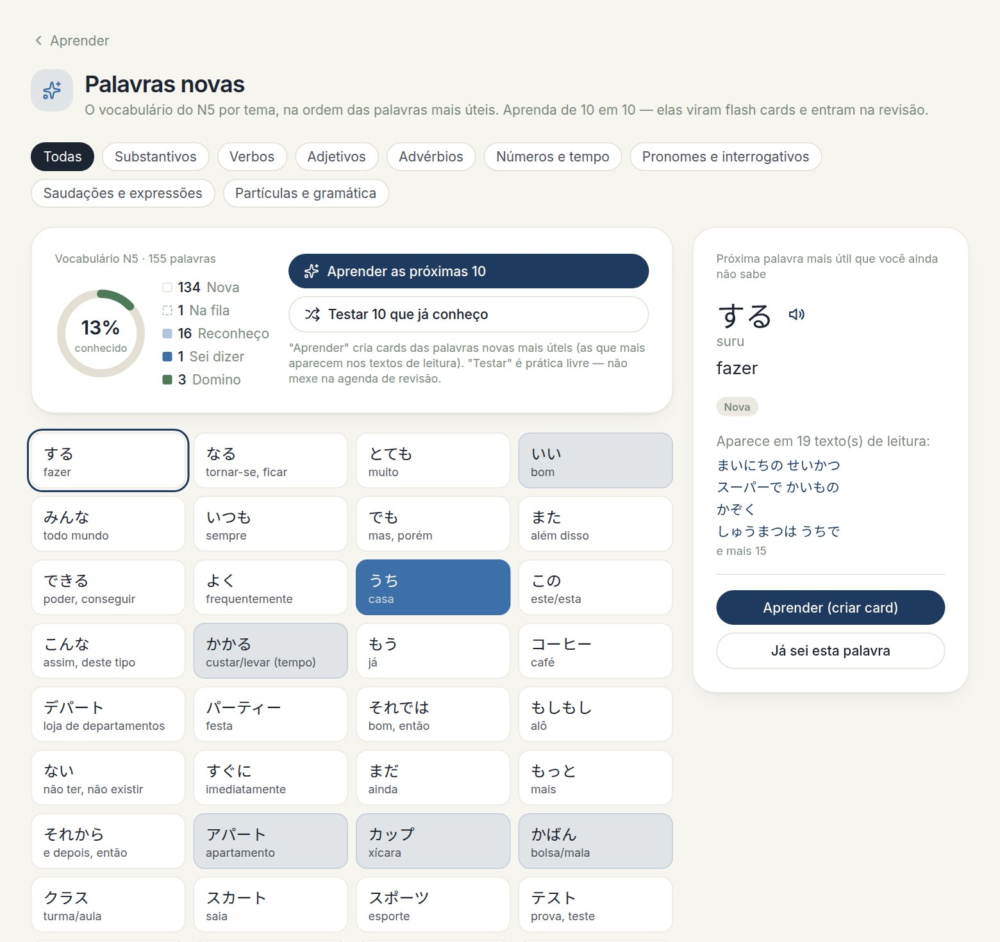
Palavras novas: filtros por tema, o quanto do N5 você já conhece, a grade de palavras e, à direita, o painel da palavra escolhida.
Botão
O que faz
Aprender as próximas 10
Cria cards para as 10 palavras mais úteis que você ainda não tem. Elas entram na revisão a partir de agora.
Testar 10 que já conheço
Um teste rápido, sem compromisso, para descobrir palavras que você já sabe. Não mexe na agenda de revisões.
Aprender (criar card)
No painel da palavra: cria o card só daquela palavra.
Já sei esta palavra
Marca como conhecida, sem criar card. Útil para palavras óbvias, como コーヒー (café).
A cor de cada palavra na grade mostra o seu estágio (explicado no capítulo 7): cinza = nova, azul-claro = reconheço, azul = sei dizer, verde = domino.
5.3 Kanji novos
Os kanji do N5 são apresentados numa ordem pensada para o aprendizado, começando pelos mais simples. Escolha
quantos aprender (5, 10 ou 20) e clique em Aprender.
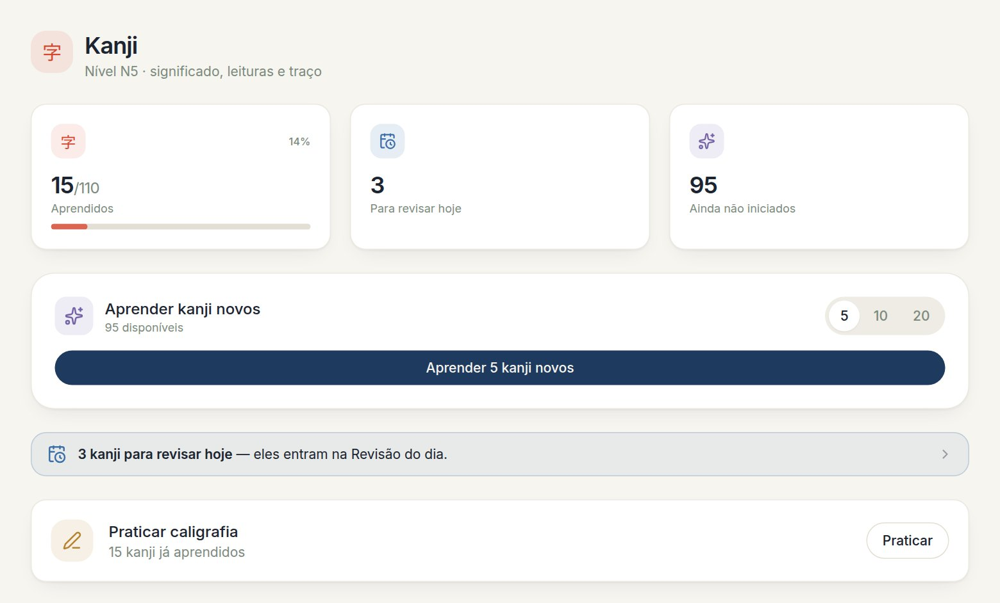
A tela de kanji: quantos você já aprendeu, quantos estão para revisar hoje e o botão de aprender novos.
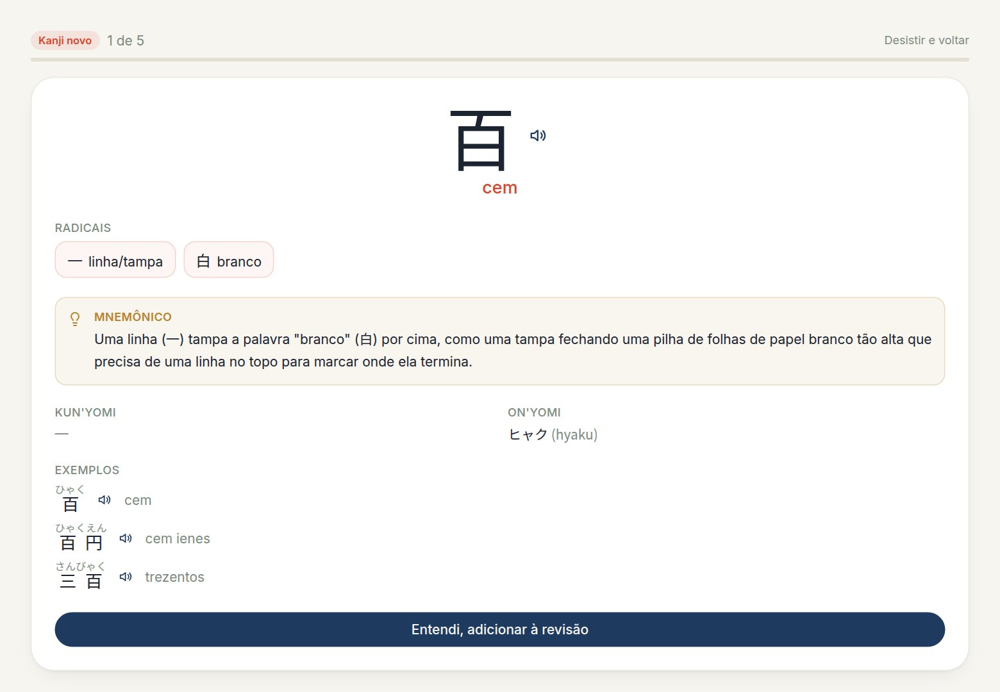
O cartão de um kanji novo: significado, radicais, mnemônico, leituras e exemplos.
Leia o cartão com calma — principalmente o mnemônico, a
pequena história que liga a forma do kanji ao significado — e clique em
Entendi, adicionar à revisão. Os kanji aprendidos passam a aparecer
na Revisão do dia, logo depois dos flash cards.
Termo
Significado
Radical
Peça que compõe o kanji e costuma dar pista do sentido.
Kun'yomi
Leitura japonesa, usada quando o kanji aparece sozinho ou com hiragana.
On'yomi
Leitura de origem chinesa, usada sobretudo em palavras de dois ou mais kanji.
5.4 Alfabetos (kana)
O treino de hiragana e katakana. Escolha o modo, a
escrita e as famílias (grupos como あいうえお)
e clique em Iniciar teste.
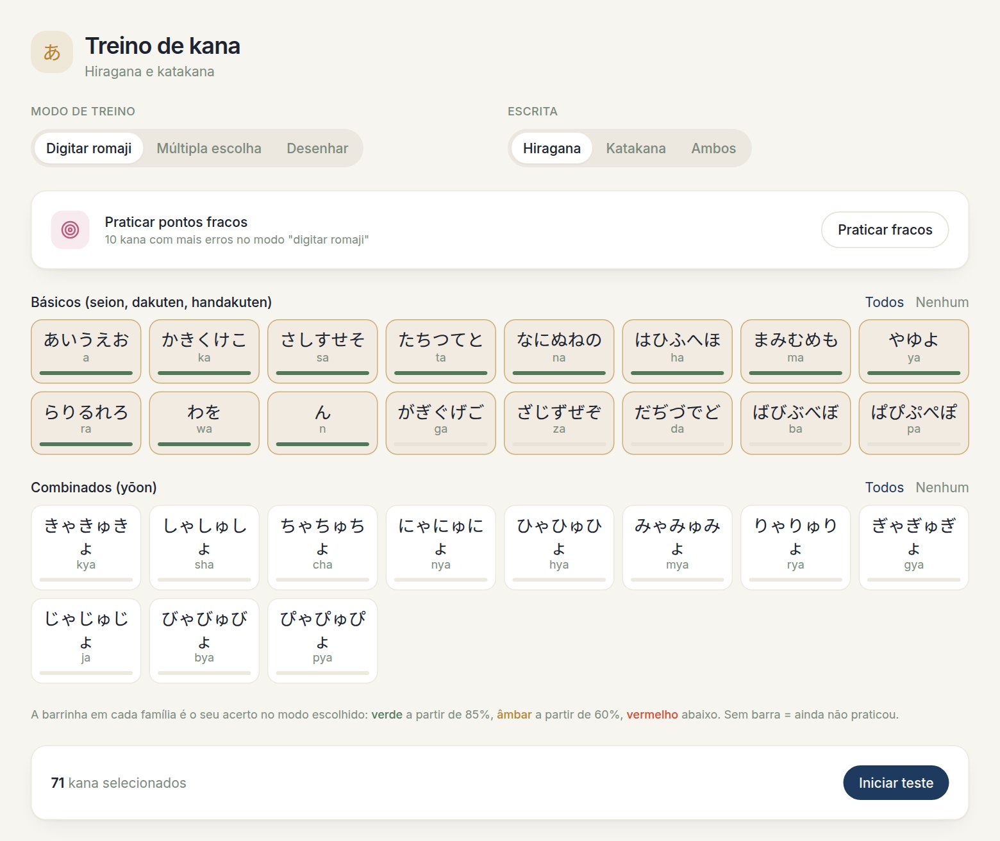
Escolha de modo, escrita e famílias. A barrinha embaixo de cada família mostra o seu acerto nela.
Modo
Como funciona
Bom para
Digitar romaji
Aparece o kana; você digita a leitura (ex.: め → me).
Ler com rapidez.
Múltipla escolha
Aparece o romaji; você escolhe o kana certo entre opções.
Diferenciar kana parecidos (ぬ/め, シ/ツ).
Desenhar
Você desenha o kana na tela; o app confere forma e ordem dos traços.
Escrever à mão (ver capítulo 6).
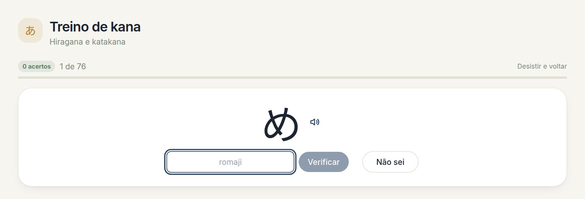
Modo "digitar romaji".
Cor da barrinha
Significa
Verde
Acerto de 85% ou mais
Âmbar
Entre 60% e 85%
Vermelho
Abaixo de 60%
Sem barra
Ainda não praticou
Dica: o cartão Praticar pontos fracos monta um treino só com os kana que você mais erra.
6Praticar — ler, ouvir, falar e escrever
Aprender uma palavra não é o mesmo que conseguir usá-la.
A seção Praticar divide o treino nas quatro habilidades:
duas de entender (ler e ouvir) e duas de produzir (falar e escrever).
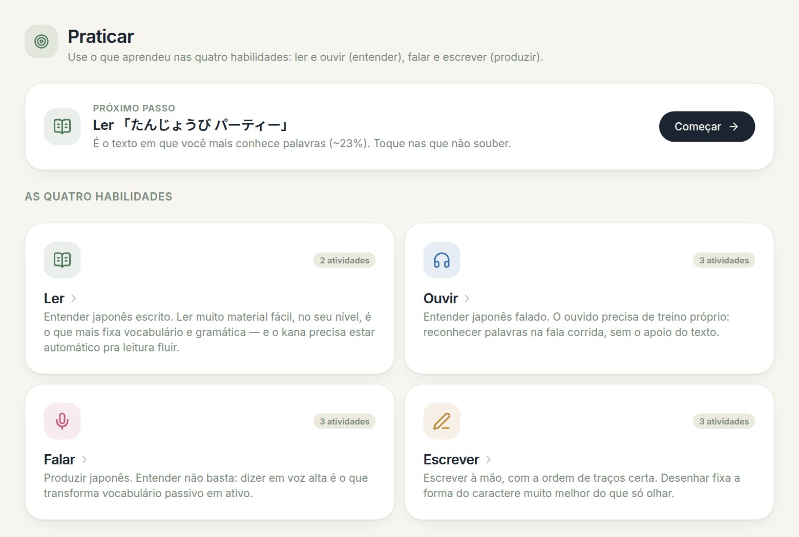
A seção Praticar: um próximo passo e as quatro habilidades.
Cada habilidade tem a mesma estrutura: Próximo passo,
Atividades (cada uma com uma linha dizendo quando usar) e
Seu nível nesta habilidade, com indicadores do que você já
fez. As atividades abrem as ferramentas já no modo certo — por exemplo,
em Ouvir o texto abre escondido.
Habilidade
Atividades
Ler
Textos graduados · Reconhecer kana
Ouvir
Escutar antes de ler · Ditado (Kakitori) · Ouvir acompanhando o texto
Falar
Diga em japonês · Shadowing · Dizer as palavras dos seus cards
Escrever
Desenhar kana · Caligrafia de kanji · Ditado escrito · Diário guiado
6.1 Ler
São 61 textos originais e curtos, em quatro níveis: Primeiros
passos (quatro ou cinco frases bem curtas, só kana — para quem acabou
de aprender o alfabeto), Nível 1 só com hiragana/katakana,
Nível 2 com kanji e furigana e Nível 3, com
textos mais longos, mais kanji e gramática do N4.
Cada texto mostra quanto do vocabulário você já conhece ("conhece ~23%").
Os melhores textos para ler são os que você conhece em 90% ou
mais: leitura fluida, e ainda sobra algo para aprender.
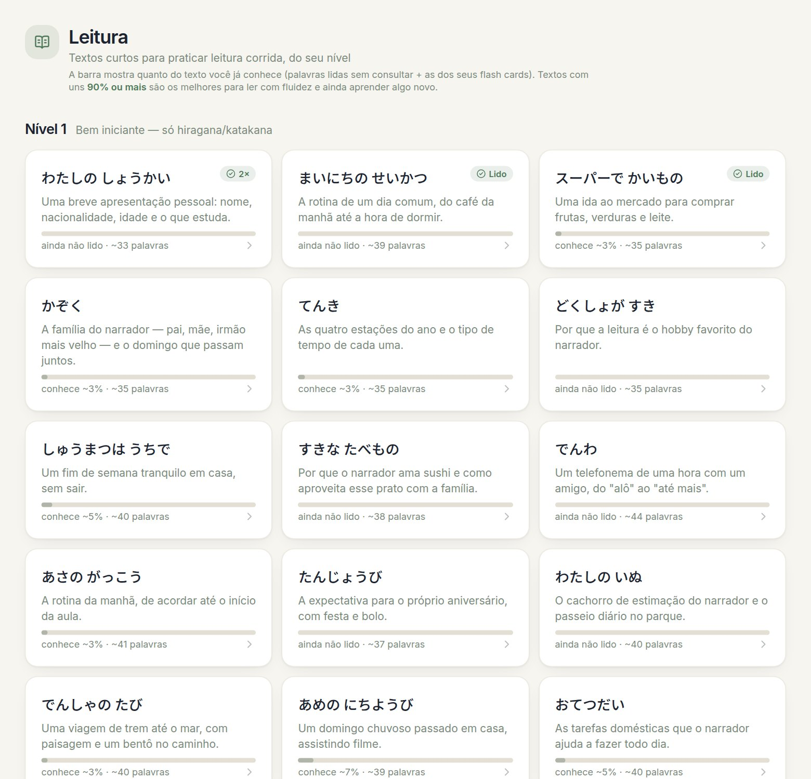
A lista de textos: nível, resumo, % conhecido e o selo "Lido".
Lendo um texto
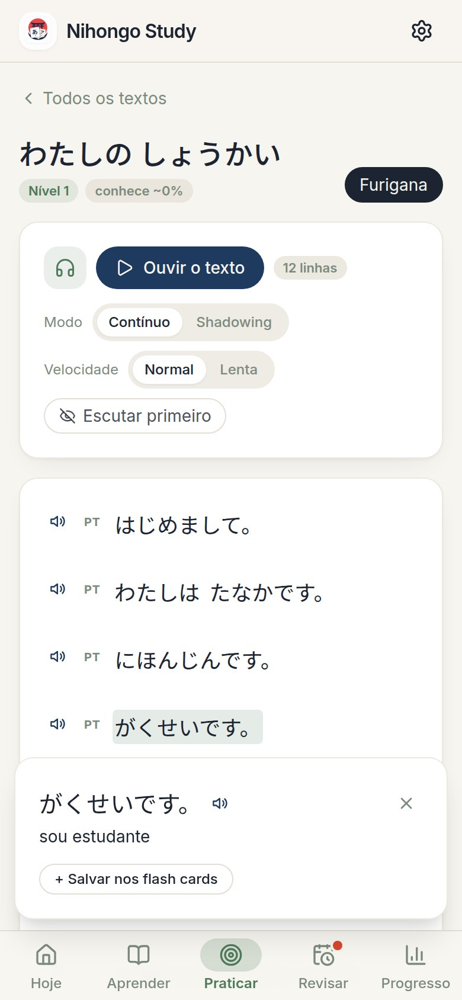
No celular, o significado da palavra tocada aparece num painel no rodapé.
Toque numa palavra para ver a leitura, o significado e ouvi-la.
Toque em PT, no começo da linha, para ver a tradução da frase inteira.
Use o botão Furigana para mostrar ou esconder a leitura em cima dos kanji.
Achou uma palavra útil? + Salvar nos flash cards cria um card com a frase do texto como exemplo.
No fim, clique em Terminei a leitura.
Por que clicar em "Terminei a leitura"? As palavras
que você não precisou consultar contam como
compreendidas — é assim que o app mede o seu
vocabulário passivo. As consultadas ficam marcadas para reforço.
6.2 Ouvir
No topo de cada texto há a barra Ouvir o texto:
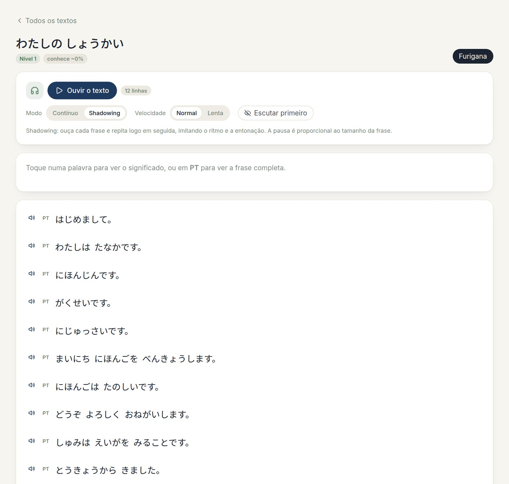
A barra de áudio, com os modos Contínuo e Shadowing, a velocidade e "Escutar primeiro".
Opção
O que faz
Contínuo
Lê o texto inteiro, destacando a linha atual. Bom para acompanhar lendo.
Shadowing
Lê uma frase e faz uma pausa do tamanho dela para você repetir em voz alta (ver Falar).
Normal / Lenta
Velocidade da fala. Vale para todo o app.
Escutar primeiro
Esconde o texto: você tenta entender só de ouvido e depois confere lendo. Ao mostrar o texto, o app pergunta quanto você entendeu (Quase tudo, Uma parte, Pouco) — é a sua nota de escuta.
Ditado (Kakitori): o app fala uma palavra ou frase das
lições e você escreve o que ouviu — digitando ou desenhando à mão. Escolha
as lições e a quantidade e clique em Gerar ditado; no fim, veja a
correção item por item.
O Seu nível de Ouvir mostra o seu acerto nos últimos
ditados e a média das suas notas de escuta.
Sobre o áudio: a voz é a voz japonesa do próprio aparelho. Se nada tocar, verifique se o volume está ligado e se o sistema tem uma voz em japonês instalada (nas configurações de "texto para fala" / "conteúdo falado").
6.3 Falar
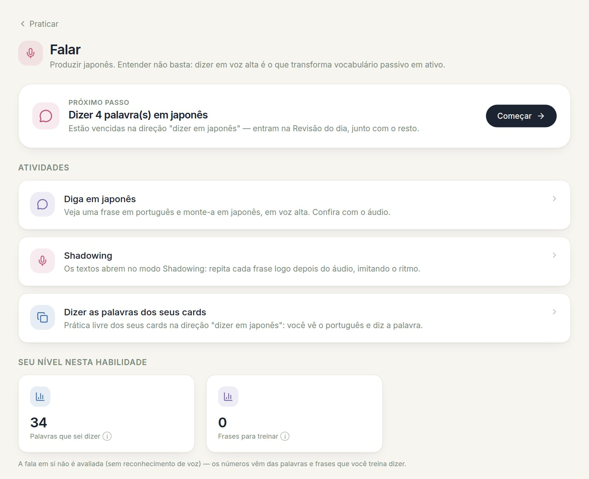
A habilidade Falar: próximo passo, atividades e indicadores.
Diga em japonês: o app mostra uma frase em português
("A Tanaka é estudante?"); você monta e diz a frase em japonês, em voz alta
ou de cabeça, e depois revela a resposta e o áudio para conferir. Marque
Acertei ou Errei com honestidade — as frases que errar podem
virar flash cards no final.
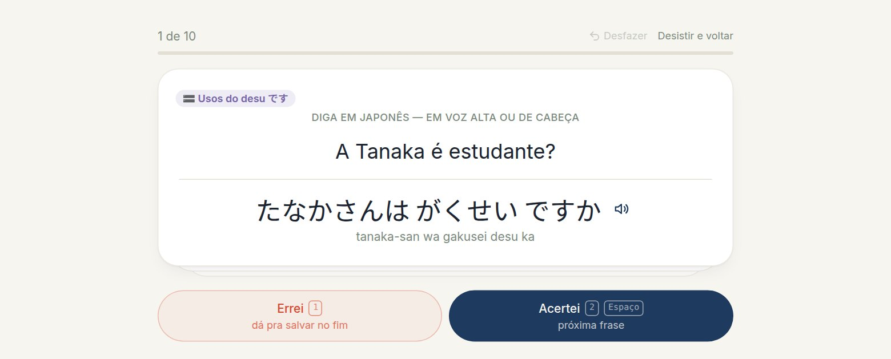
Diga em japonês, com a resposta já revelada.
Shadowing: abra um texto já lido, escolha o modo Shadowing
e repita cada frase logo depois do áudio, imitando o ritmo e a entonação.
Dizer as palavras dos seus cards: uma prática livre em que
você vê o português e diz a palavra em japonês.
O app guarda o resultado de cada frase do Diga em japonês e cada
shadowing feito até o fim do texto: o Seu nível de Falar
mostra o seu acerto recente e quantos textos você já acompanhou em
shadowing, e o Próximo passo sugere repetir a lição em que você
mais errou frases nos últimos dias.
Nota: o app não grava nem avalia a sua voz. Quem confere é você, comparando com o áudio — por isso, fale de verdade, em voz alta.
6.4 Escrever
Escrever à mão fixa a forma do caractere muito melhor do que só olhar.
Use o dedo, uma caneta para tela ou o mouse.
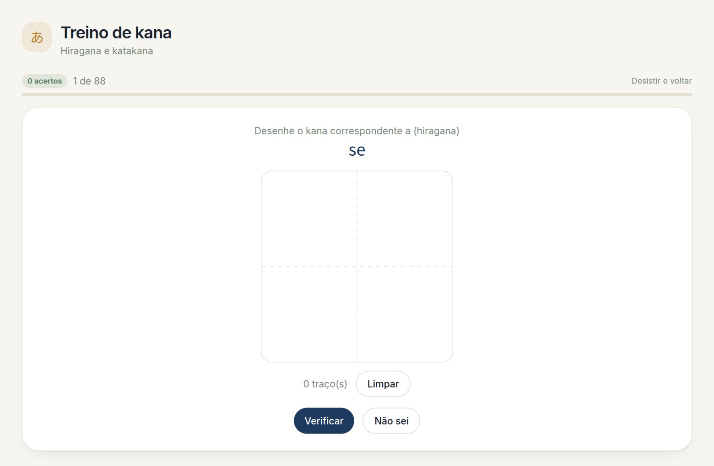
Desenhar kana: o app pede um som e você desenha o caractere.
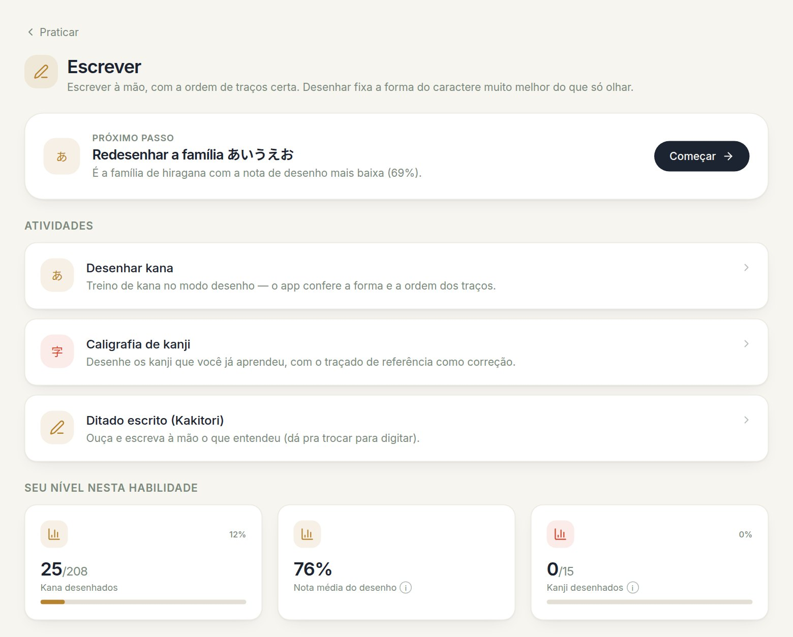
A habilidade Escrever sugere a família de kana com a nota de desenho mais baixa.
Desenhe os traços na ordem e na direção certas (de cima para baixo, da esquerda para a direita, na maioria dos casos).
Errou um traço? Clique em Limpar e recomece.
Clique em Verificar. O app mostra a nota e uma animação do traçado correto — assista quando a nota for baixa.
Não lembra? Não sei mostra a resposta para você estudar.
A Caligrafia de kanji funciona do mesmo jeito, com os kanji
que você já aprendeu: o app mostra o significado e você desenha o kanji.
Diário guiado: propostas curtas de escrita ligadas às
lições ("Quem eu sou", "O que eu fiz ontem", "Minha rotina"…). Escreva
algumas frases suas — em kana, ou em romaji se ainda não tiver o teclado
japonês —, veja um exemplo se travar e, no fim, marque o
checklist da proposta ("usei でした para algo de ontem",
"não pus さん no meu nome"…). Não há correção automática: o checklist é a
sua conferência. As entradas ficam salvas e podem ser editadas. O fim de
cada lição tem um atalho para as propostas dela.
7Revisar — não esquecer o que aprendeu
A seção mais importante para quem quer reter o que estudou.
Aqui ficam a Revisão do dia, os Pontos fracos,
o Quiz das lições, a Gramática em contexto e
os Meus cards.
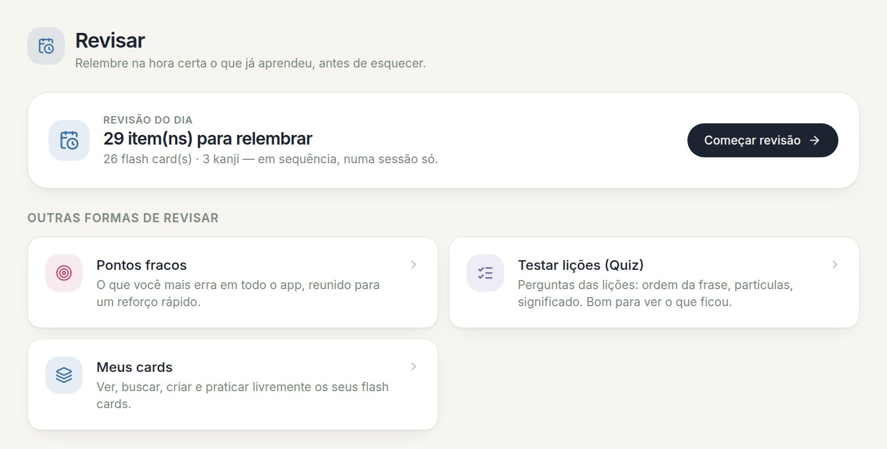
A seção Revisar: a Revisão do dia em destaque e as outras formas de revisar.
7.1 Revisão do dia
Junta tudo o que está agendado para hoje: primeiro os flash cards, depois
os kanji, numa sessão só. Clique em Começar revisão.
Como responder a um card
Veja a frente (a palavra em japonês) e tente lembrar o significado antes de olhar.
Clique em Mostrar resposta (ou aperte Espaço).
Diga ao app como foi, com sinceridade. É isso que define quando o card volta.
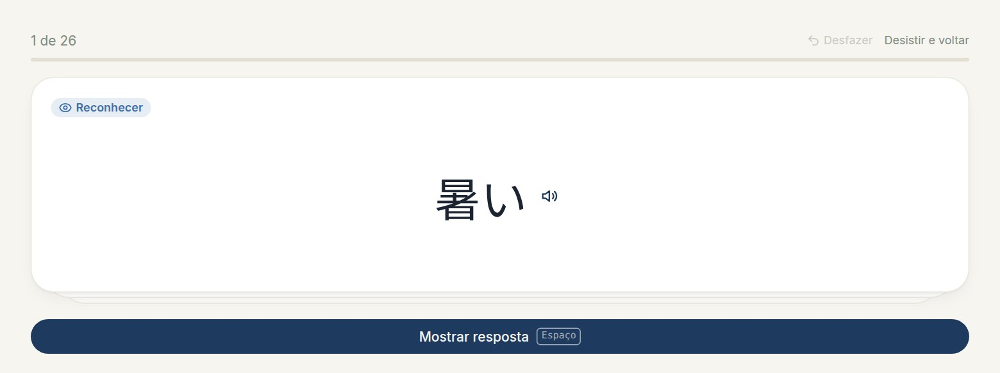
Frente do card.
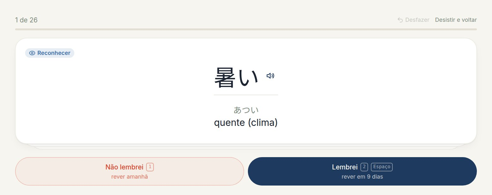
Verso, com os botões de resposta e quando o card volta.
Por padrão há 2 botões; em Configurações você pode ativar
4 botões para ajustar o intervalo com mais precisão. Embaixo de
cada botão aparece quando o card volta (ex.: "rever em 3 dias").
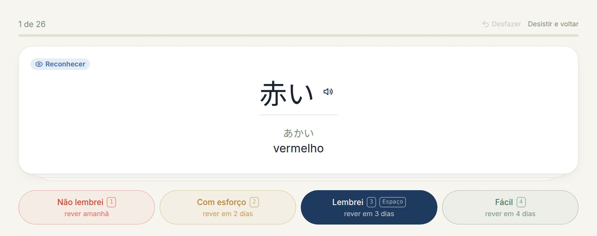
O modo de 4 botões.
Botão
Quando usar
Tecla
Não lembrei
Não lembrou, ou lembrou errado. O card volta logo.
1
Com esforço(4 botões)
Lembrou, mas demorou ou ficou em dúvida.
2
Lembrei
Lembrou normalmente. É a resposta mais comum.
Espaço (ou 2/3)
Fácil(4 botões)
Lembrou na hora, sem nenhum esforço. O intervalo cresce mais.
4
Outros atalhos e controles
Ctrl+Z ou Desfazer
Desfaz a última resposta (clicou no botão errado sem querer).
Desistir e voltar
Sai da sessão. O que já foi respondido fica salvo.
Ícone de alto-falante
Ouve a palavra.
Dica: "Não lembrei" não é castigo. Marcar "Lembrei" sem ter lembrado só faz o card sumir por dias, e você esquece de vez. Seja honesto, e o app ajusta a revisão para você.
7.2 Os estágios de uma palavra
Toda palavra passa por estágios. Primeiro você aprende a
reconhecer (ver o japonês e saber o significado); quando isso
fica firme, o app passa a pedir também que você diga a palavra
em japonês a partir do português.
Estágio
Significa
Como chega lá
Novo
Ainda não revisado.
Ao criar o card.
Reconheço
Você entende a palavra em japonês.
Na primeira revisão.
Sei dizer
Você também treina dizê-la, partindo do português.
Automático, quando o reconhecimento fica firme (o card passa a voltar só daqui a 7 dias ou mais). Também dá para ativar à mão em Meus cards › Treinar a dizer.
Domino
Você diz a palavra com segurança.
Quando a direção "dizer" passa a voltar só daqui a 21 dias ou mais.
Os cards de "dizer" aparecem com a pergunta Como se diz em japonês?. Para não entregar a resposta, as duas direções do mesmo card nunca aparecem no mesmo dia.
7.3 Pontos fracos
Reúne o que você mais erra em todo o app: flash cards esquecidos, kana com
acerto baixo, kanji difíceis, palavras consultadas na leitura e frases e
perguntas das lições que você errou (no quiz, no ditado, na gramática em
contexto e no Diga em japonês). Use
Treinar meus pontos fracos para um treino com tudo, ou
Treinar só estes em cada grupo.
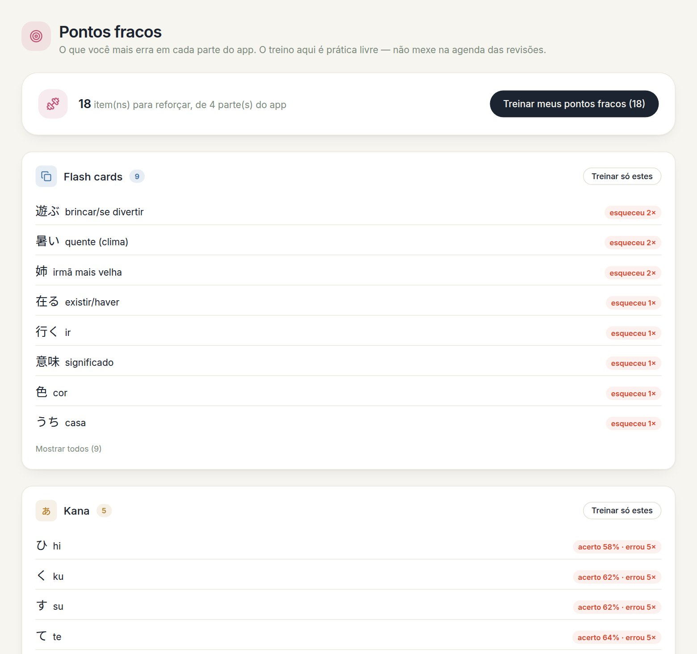
Pontos fracos, separados por parte do app.
Nota: o treino de pontos fracos é prática livre: ajuda a fixar, mas não muda a agenda das revisões.
7.4 Testar lições (Quiz)
Escolha as lições e os tipos de pergunta (reordenar frase, escolher
partícula, significado, verdadeiro ou falso) e clique em Gerar quiz.
É o jeito de ver o que ficou de cada lição.
7.5 Gramática em contexto
Frases novas, que não aparecem nas lições, com uma lacuna
para completar — a forma de です certa, a partícula, こ/そ/あ, o sufixo, a
saudação da situação. Escolha os pontos gramaticais (agrupados por lição) e
a quantidade. Cada resposta vem com o porquê. Serve para ver se você pegou
a regra, e não só decorou o exemplo da lição.
7.6 Meus cards
A lista de todos os seus flash cards, com busca e filtro por categoria.
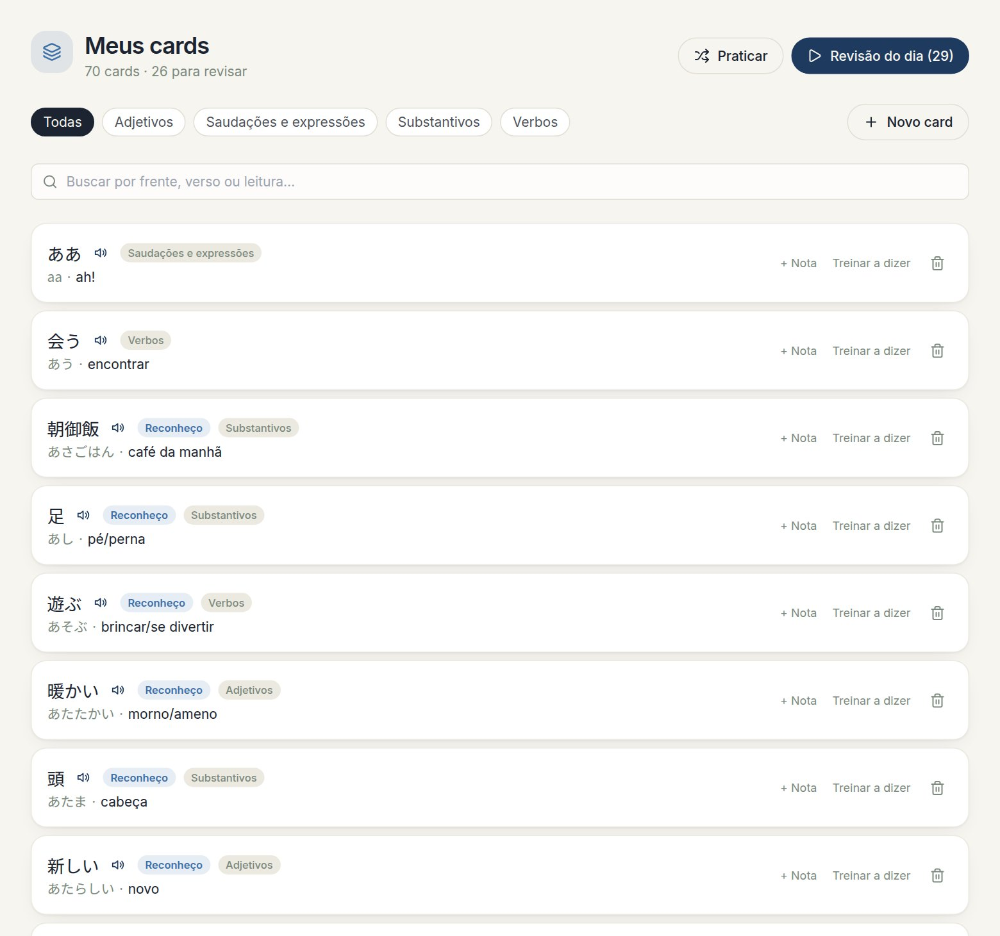
Meus cards: filtros, busca e as ações de cada card.
Ação
Para que serve
+ Novo card
Criar um card à mão: frente (japonês), leitura, significado e categoria.
+ Nota
Anotar algo sobre a palavra (origem, uso, um falso amigo). Aparece no verso do card.
Treinar a dizer
Leva o card direto para o estágio "Sei dizer".
Praticar
Prática livre com os cards que você escolher, em qualquer direção. Não mexe na agenda.
Revisão do dia (N)
Atalho para a revisão agendada.
Lixeira
Excluir o card (pede confirmação).
8Progresso — como você está indo
Mostra o que você já domina e onde ainda está fraco, para
decidir o próximo passo. Nada aqui precisa ser preenchido — tudo é
calculado a partir do que você estuda.
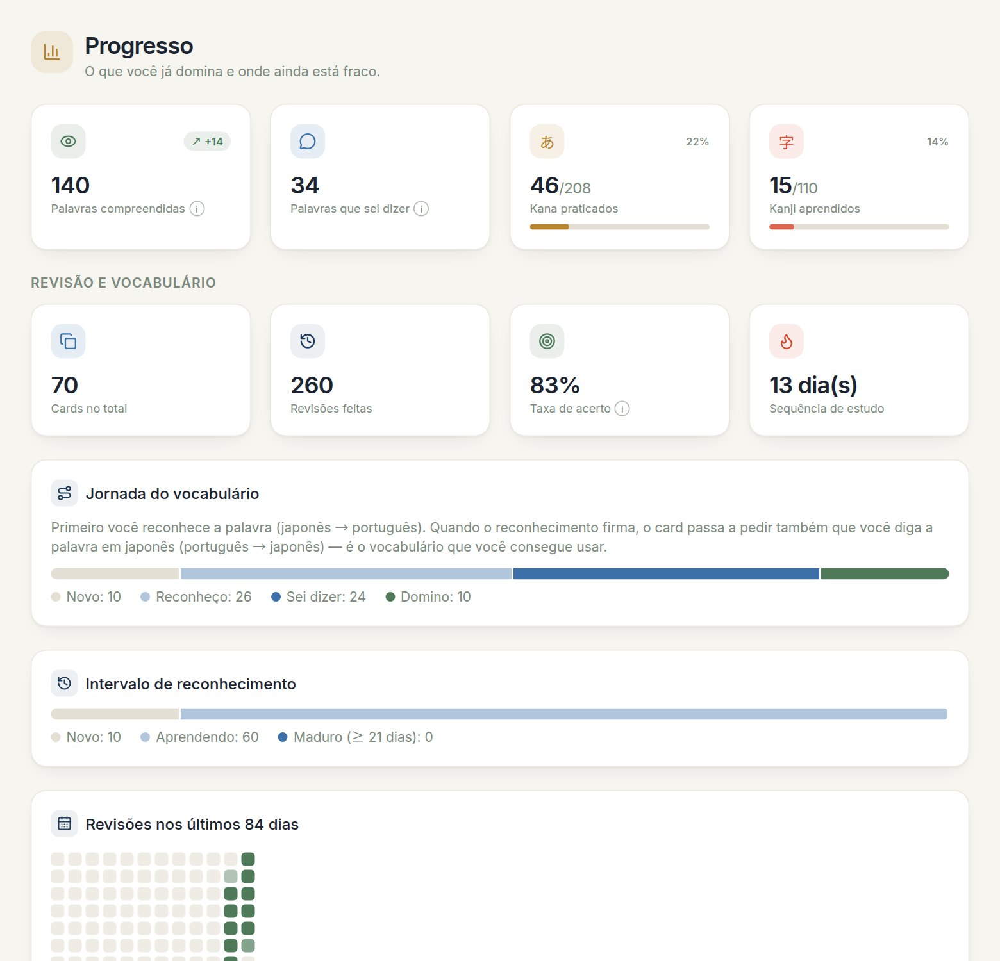
A página Progresso.
Indicador
O que mede
Palavras compreendidas
Seu vocabulário passivo: palavras que você entende (cards já revisados + palavras lidas sem consultar + "Já sei"). O selo ↗ mostra quantas entraram nesta semana.
Palavras que sei dizer
Seu vocabulário ativo: cards nos estágios Sei dizer e Domino.
Kana praticados / Kanji aprendidos
Quanto dos alfabetos e dos kanji do N5 você já cobriu.
Taxa de acerto
Porcentagem de revisões em que você lembrou. Entre 80% e 90% é o ideal.
Sequência de estudo
Os mesmos dias seguidos mostrados na tela Hoje.
Jornada do vocabulário
Quantas palavras estão em cada estágio (Novo, Reconheço, Sei dizer, Domino).
Revisões nos últimos 84 dias
Um calendário: quanto mais escuro o quadrado, mais revisões naquele dia.
Conquistas
No fim da página ficam as conquistas: marcos como "50
palavras", "Todo o hiragana", "Kanji do N5", "Uma semana" de sequência ou
"Trilha completa" das lições. As desbloqueadas mostram a data; as outras, o
quanto falta. Quando você desbloqueia uma, aparece um aviso discreto no
rodapé da tela. Sem ranking nem comparação: são só os seus marcos.
Dica: taxa de acerto muito abaixo de 80%? Você provavelmente está aprendendo palavras novas rápido demais. Faça só as revisões por alguns dias.
9Configurações, sincronização e backup
Abra pela engrenagem (no topo, no celular; no fim do menu, no
computador). São três abas: Dados,
Configurações e Sobre o App (versão do app e
este manual, para abrir ou baixar).
9.1 Preferências
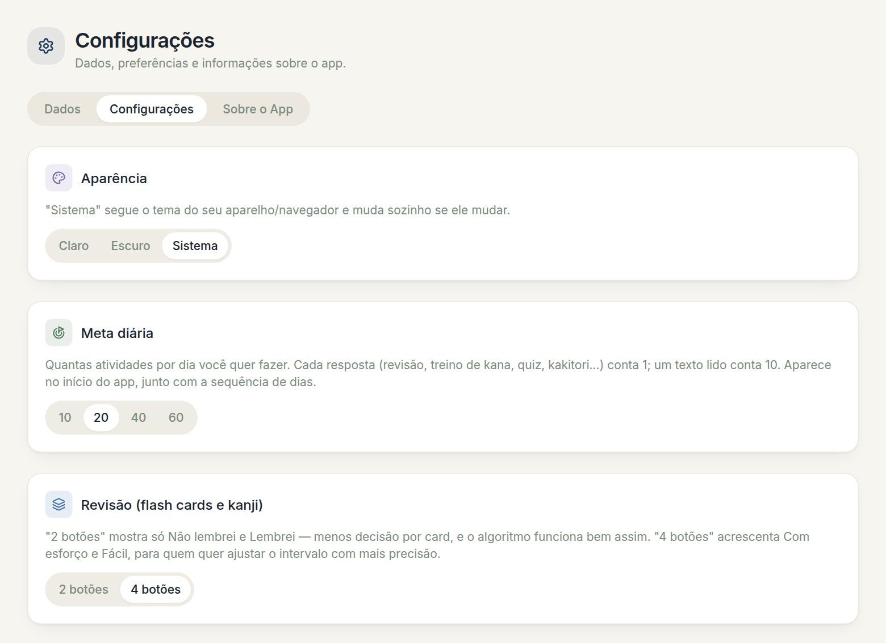
A aba Configurações.
Opção
Escolhas
Aparência
Claro, Escuro ou Sistema (segue o tema do aparelho).
Meta diária
10, 20, 40 ou 60 atividades por dia.
Revisão
2 botões (Não lembrei / Lembrei) ou 4 botões (+ Com esforço e Fácil).
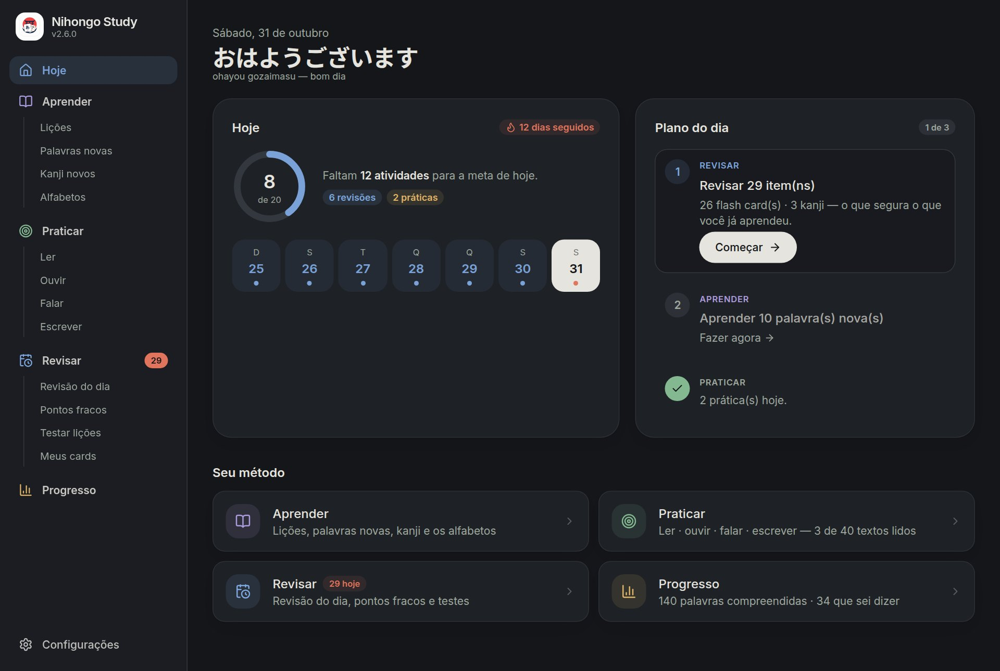
O app no tema escuro.
9.2 Sincronizar com o Google Drive
É o jeito mais fácil de não perder nada e de estudar em mais de um
aparelho (celular e computador, por exemplo): o app guarda uma cópia dos
seus dados no seu Google Drive e mantém todos os aparelhos
conectados iguais, sozinho. É opcional — sem ela o app funciona do mesmo
jeito.
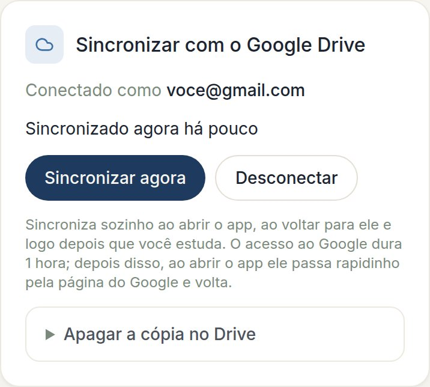
Conectado: a conta e quando foi a última sincronização.
Como ligar
Abra Configurações › Dados e toque em Conectar com o Google.
Escolha a sua conta Google e permita o acesso ao Drive. O app só pode ver a pasta dele.
Pronto: o app volta sozinho e faz a primeira sincronização.
Nos outros aparelhos, faça o mesmo, com a mesma conta.
Nada se perde ao conectar: se o aparelho já tinha estudo e o Drive também, os dois são juntados.
Como funciona no dia a dia
Ele sincroniza sozinho: ao abrir o app, ao voltar para ele, uns 30 segundos depois que você estuda e ao sair dele. Você não precisa apertar nada.
O estudo feito em cada aparelho é somado (revisões, atividade do dia, sequência), o que você apaga num aparelho sai dos outros e, quando a mesma coisa muda nos dois, vale a mudança mais recente.
Os dados ficam numa pasta oculta do app no seu Drive: ela não aparece na lista de arquivos, e o app não enxerga nenhum outro arquivo seu. Não existe servidor do app no meio.
Sem internet, você estuda normalmente; o app envia tudo quando a conexão voltar.
O acesso ao Google dura 1 hora. Depois disso, ao abrir o app (ou voltar para ele numa tela fora de uma sessão de estudo), ele passa rapidinho pela página do Google e volta sozinho, sem pedir senha.
Mensagens que podem aparecer
Mensagem
O que quer dizer
O que fazer
Sincronizado há…
Está tudo em dia.
Nada.
Sem internet
O aparelho está offline.
Nada: sincroniza quando a conexão voltar.
Sincronização pausada (na tela Hoje) ou O acesso ao Google venceu
O Google pediu para você entrar de novo.
Toque em Entrar / Entrar de novo no Google. O que você estudou enquanto isso continua guardado e é enviado depois.
Não deu para sincronizar
Um erro passageiro (rede, Google fora do ar).
O app tenta de novo sozinho; Sincronizar agora tenta na hora.
Quando apertar "Sincronizar agora"
Quase nunca. Ele serve para: pegar na hora o que outro aparelho acabou de
enviar, com o app já aberto; ter certeza de que o que você acabou de estudar
já subiu, antes de trocar de aparelho; e tentar de novo depois de um erro.
Desconectar e apagar
Desconectar para de sincronizar este aparelho. Nada é apagado — nem aqui, nem no Drive.
Apagar a cópia no Drive remove o arquivo do app do seu Drive e desconecta este aparelho. Os dados do aparelho ficam. Se outro aparelho continuar conectado, ele cria a cópia de novo.
Usar Substituir (importar backup) ou Apagar tudo num aparelho conectado também vale para o Drive. Os outros aparelhos perguntam, na próxima sincronização, se devem ficar iguais.
iPhone: com o app instalado na Tela de Início, a sincronização pode não funcionar bem — às vezes o login do Google não volta para o app. No Android e no computador funciona normalmente. Se tiver problema no iPhone, use a sincronização com arquivo (9.4).
9.3 Backup
O backup é um arquivo .json com tudo: cards, histórico de
revisões, kana, kanji, leituras, atividade e preferências.
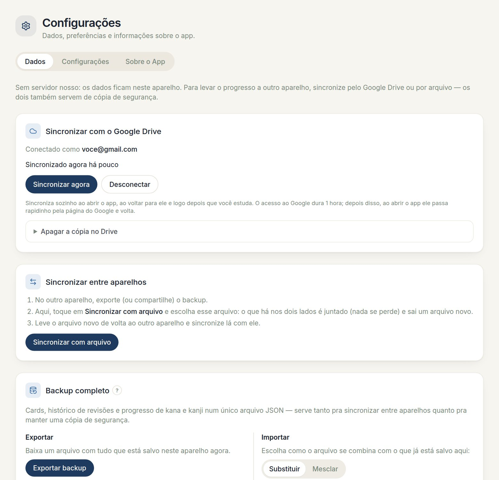
A aba Dados: Google Drive, sincronizar com arquivo e backup completo.
Exportar backup baixa o arquivo. No celular, Compartilhar manda o arquivo direto para o Drive, o WhatsApp ou o e-mail. Guarde-o num lugar seguro.
Abaixo dos botões aparece quando foi o último backup. Se passar uma semana sem nenhum, a tela Hoje mostra um lembrete. Com o Google Drive ligado, cada sincronização já conta como backup.
Importar backup lê um arquivo exportado, de duas formas:
Modo
O que acontece
Quando usar
Substituir
Apaga o que está no aparelho e coloca o conteúdo do arquivo.
Restaurar um backup; aparelho novo.
Mesclar
Junta os dois: o estudo dos dois lados é somado, o que foi apagado num lado sai do outro e, quando a mesma coisa mudou nos dois, vale a mudança mais recente. Nada é duplicado, mesmo mesclando o mesmo arquivo duas vezes.
Estudou em dois aparelhos e quer juntar tudo.
9.4 Estudar em mais de um aparelho sem o Google Drive
Se preferir não usar o Google Drive, dá para manter dois aparelhos iguais
com um arquivo, pela seção Sincronizar entre aparelhos:
No aparelho A: Exportar backup (ou Compartilhar) e leve o arquivo ao aparelho B.
No aparelho B: toque em Sincronizar com arquivo e escolha esse arquivo. Os dois lados são juntados e sai um arquivo novo.
Ainda no B: Compartilhar ou Baixar arquivo e leve o arquivo novo de volta ao A.
No aparelho A: Sincronizar com arquivo com esse arquivo novo. Pronto: os dois estão iguais.
Hábito recomendado: sem o Google Drive, exporte um backup uma vez por semana, mesmo usando um aparelho só.
9.5 Importar cards de outros lugares
Em Importar cards você pode trazer cards de uma planilha (CSV),
de um arquivo JSON ou de um baralho exportado do Anki em texto (.txt). O
ícone ? ao lado do título explica cada formato.
Vocabulário N5 › Avançado: permite importar categorias inteiras do N5 de uma vez. Use com cuidado — centenas de cards novos enchem a Revisão do dia. O caminho recomendado é Aprender › Palavras novas, de 10 em 10.
10Perguntas frequentes e glossário
Perguntas frequentes
Fiquei dias sem estudar e a revisão acumulou. E agora?
Faça a Revisão do dia em partes (você pode sair com Desistir e voltar e continuar depois — o que respondeu fica salvo) e não aprenda palavras novas até a fila voltar ao normal.
Respondi errado sem querer.
Clique em Desfazer (ou Ctrl+Z) logo em seguida.
O áudio não toca.
Confira o volume e se o aparelho tem uma voz em japonês instalada (configurações de acessibilidade/"texto para fala"). No iPhone, o botão de modo silencioso também pode bloquear o som.
Preciso de internet?
Só para abrir o app pela primeira vez, para receber atualizações e para sincronizar com o Google Drive. O estudo em si funciona offline; a sincronização acontece quando a internet voltar.
Troquei de celular. Perdi tudo?
Não, se a sincronização com o Google Drive estava ligada: instale o app no aparelho novo e conecte com a mesma conta Google — seus dados voltam. Sem ela, use um backup: importe o arquivo no modo Substituir.
Estudei no celular e no computador. Perco alguma coisa?
Não. Com o Google Drive ligado nos dois, tudo é juntado sozinho; o estudo de cada aparelho é somado. Se o outro aparelho estava aberto o tempo todo, saia e volte para o app (ou toque em Sincronizar agora) para ver na hora o que veio do outro.
Apareceu "Sincronização pausada" na tela Hoje.
O Google pediu para você entrar de novo. Toque em Entrar: o app já sugere a conta que estava conectada. Nada do que você estudou nesse meio-tempo se perde. Se o aviso volta toda hora, veja em Configurações › Dados o código que o Google devolveu (aparece entre parênteses, depois de "Google:") — ele diz o motivo.
Ainda não sei ler hiragana. Por onde começo?
Pela lição "Kana — Hiragana e Katakana" e pelo treino em Aprender › Alfabetos. As lições sempre têm romaji, então você pode estudá-las em paralelo.
Por que o app pede para eu dizer as palavras em japonês?
Porque reconhecer e produzir são habilidades diferentes. Quando você já reconhece bem uma palavra, o app passa a treinar também dizê-la (estágio "Sei dizer").
A palavra que salvei da leitura sumiu?
Ela virou um card: está em Revisar › Meus cards e já entra na próxima Revisão do dia.
Glossário
Hiragana
Alfabeto silábico usado para palavras japonesas e terminações gramaticais (あ, い, う…).
Katakana
Alfabeto silábico usado para palavras estrangeiras e ênfase (ア, イ, ウ…).
Kana
Hiragana e katakana juntos.
Kanji
Caracteres de origem chinesa que representam ideias (日 = sol, dia).
Romaji
Japonês escrito com letras latinas (konnichiwa).
Furigana
Leitura em hiragana pequena, escrita em cima de um kanji.
N5
Primeiro nível do JLPT, o exame oficial de proficiência em japonês.
Repetição espaçada
Técnica de revisar cada item em intervalos cada vez maiores, na hora em que você está quase esquecendo.
FSRS
O algoritmo que o app usa para agendar as revisões.
Flash card
Cartão com a palavra de um lado e o significado do outro.
Mnemônico
Pequena história ou imagem que ajuda a memorizar.
Shadowing
Repetir em voz alta logo depois do áudio, imitando ritmo e entonação.
Kakitori
Ditado: ouvir e escrever o que foi dito.
Vocabulário passivo / ativo
Palavras que você entende / palavras que consegue dizer.
がんばってください！ ganbatte kudasai — boa sorte nos estudos!
 Nihongo Studyrcaneppele.github.io
Nihongo Studyrcaneppele.github.io